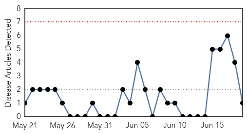
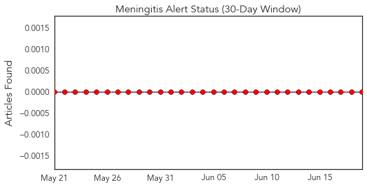
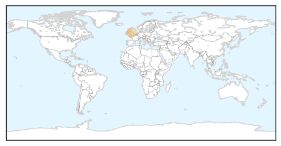
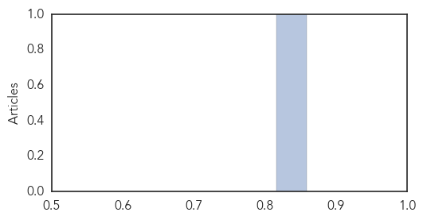

Meningitis
30-Day Web Trend
0 alerts, 0 warnings

30-Day Twitter Trend
0 alerts, 0 warnings

Article Locations
Article Confidences
Top Articles:
Top Tweets:
-
No tweets found for Jun 19, 2014
Measles
30-Day Web Trend
1 alerts, 0 warnings

30-Day Twitter Trend
0 alerts, 0 warnings

Article Locations

Article Confidences

Top Articles:
- 0.992
- health officials fear outbreak in Queensland
- 0.956
- Measles cases soaring with Brisbane Metro North hardest hit
- 0.888
- Kansas City measles outbreak grows
- 0.841
- Editorial: Measles should not be making a comeback
- 0.717
- Elevated Childhood Disease Risk Seen from Rush of Immigrant Childen
- 0.709
- Pacific Daily News
Top Tweets:
-
No tweets found for Jun 19, 2014